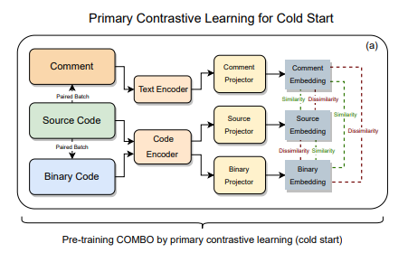
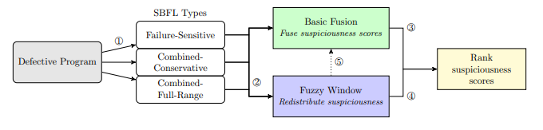
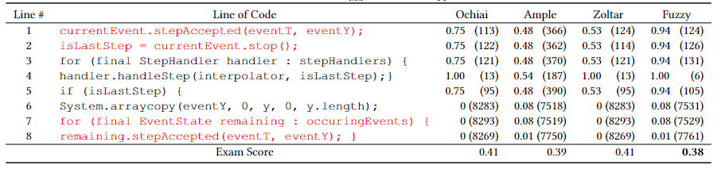
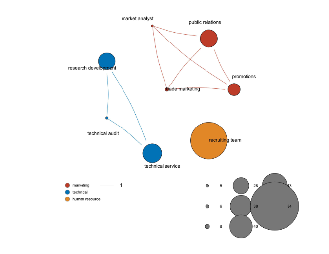

|
Yueke Zhang (张跃柯)I am a senior student majoring in Management Information System, specifically Software Engineering direction, expected to graduate in 2023 and aiming for a PhD position for 2023 Fall. Here is my CV. My research interest lies in Fault Localization, Code Comprehension and Open Source Software. Currently I am an intern at Vanderbilt Universit supervised by Prof. Yu Huang and Prof. Kevin Leach My email is zyueek@gmail.com. Feel free to contact me. |

|
Research Experience
-
Vanderbilt University
Nashville, United States
Jan. 2022-Present
Research Intern
Advisor: Yu Huang, Kevin Leach
Topic: Code Intelligence and Open Source Software
-
University of Electronic Science and Technology of China
Chengdu, China
April. 2021-Jan.2022
Research Intern
Advisor: Yong Deng
Topic: Operation Research on Dependence analysis in information sources combination.
-
Southwest University
Chongqing, China
Jun. 2021-Sep.2022
Research Intern
Advisor: Rui Cai
Topic: Graph computing in large group decision making
Publications
|

|
Yifan Zhang, Chen Huang , Yueke Zhang, Kevin Cao, Scott Thomas Andersen, Huajie Shao, Kevin Leach, Yu Huang In Submission to ICDE, 2022 arXiv / code |
|

|
Yueke Zhang, Kevin Leach, Yu Huang In Submission to ICSE, 2022 arXiv / code |
|

|
Yueke Zhang, Yu Huang, Genetic and Evolutionary Computation Conference Companion, 2022 Workshop GI paper / code |
|

|
Yueke Zhang, Rui Cai, Jingjing Yang, Working Paper arXiv / code |
Leveraging Fuzzy System to Reduce Uncertainty of Decision Making in Software Engineering Automation(GI 2022')Date: June 8, 2022Slides: Link |
|
Overall GPA: 3.4 (Top 10%)
Rank 2 for the 1th semester(2/279) |